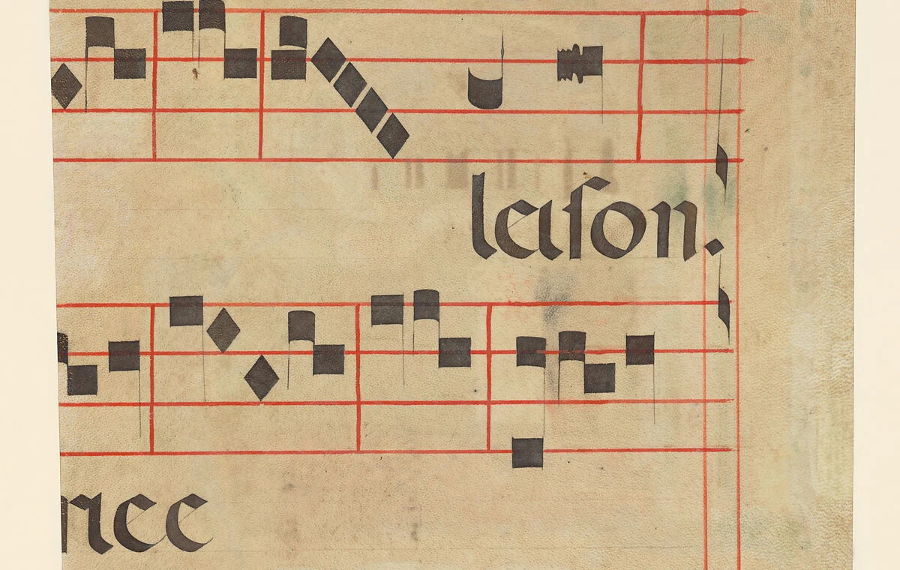
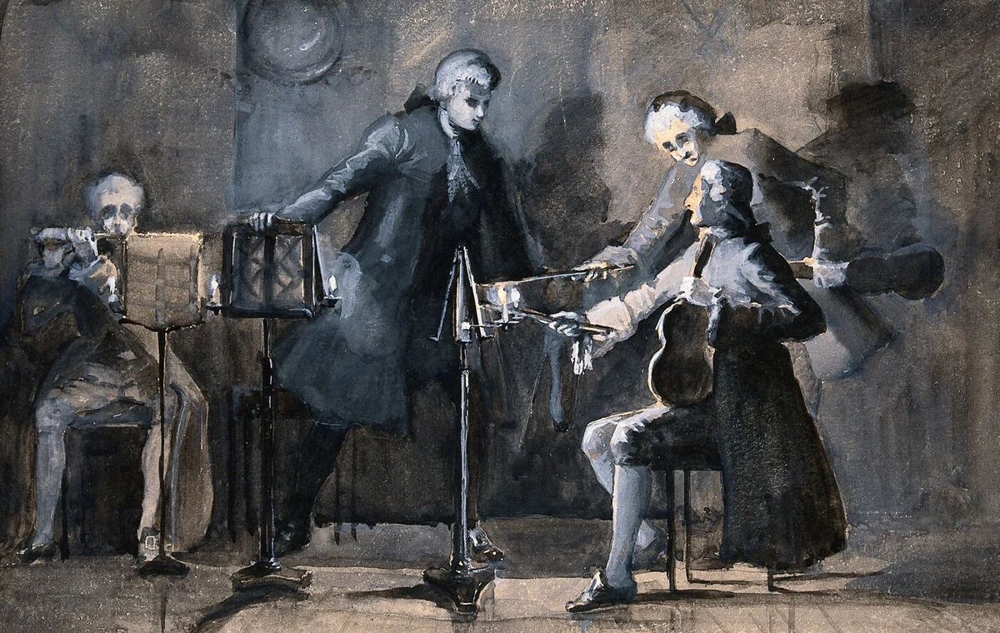
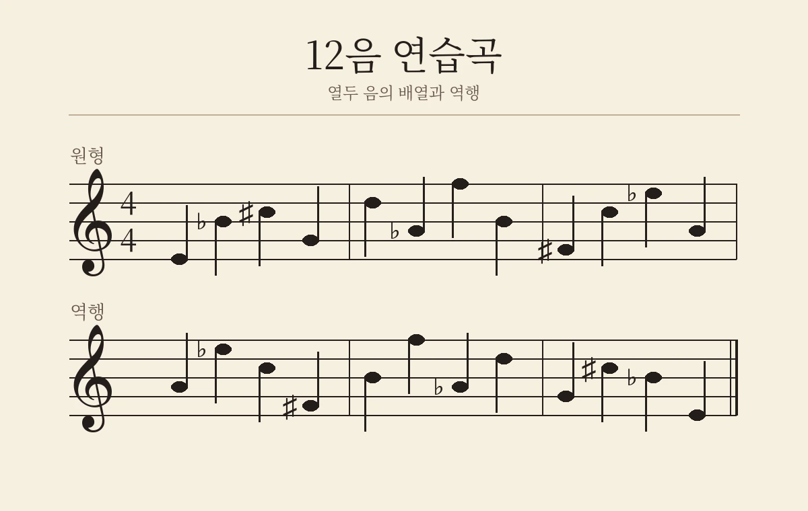

음악사
시대가 바뀔 때,
음악은 어떻게 달라졌을까?
르네상스
여러 목소리가 한 곡 안에서 어떻게 만났을까?
교회와 궁정 예배당에서는 여러 성부가 한데 얽히는 합창곡을 불렀다. 펼친 성가책 한 권을 함께 보는 가수들처럼, 각 성부는 제 선율을 이어 가면서 다른 성부의 소리에 귀를 기울였다.

고전주의
곡의 형식은 어떻게 다음 소리를 기대하게 만들까?
18세기에는 궁정과 가정의 실내악에 더해 표를 사서 듣는 공개 연주회가 늘었다. 청중은 처음 듣는 기악곡도 앞뒤 악구를 견주며 따라갈 수 있었다. 한 악구가 질문처럼 멈추면 다음 악구의 끝음이 답이 된다.

낭만주의
작곡가는 자신이 속한 곳을 어떻게 음악에 담았을까?
19세기 작곡가들은 고장의 춤과 노래에서 연주회장의 음악을 끌어냈다. 폴란드의 마주르카에서는 둘째 박이나 셋째 박에 힘이 실리기도 한다. 노르웨이의 혼례 행렬과 스웨덴의 한여름 춤, 러시아 쿠르스크의 원무는 사람들이 어떤 자리에서 음악을 나눴는지 보여 준다.


20세기 초 모더니즘
으뜸음에서 벗어나면 무엇이 곡을 하나로 묶을까?
조성의 중심에서 멀어진 쇤베르크는 음 사이의 관계에서 곡의 질서를 찾았다. 1920년대에 정립한 12음 기법에서는 열두 음의 순서를 정해 둔다. 악보에서 첫 줄의 끝음은 둘째 줄의 첫음이 된다. 같은 음렬을 뒤에서부터 읽는 ‘역행’이다.
아르놀트 쇤베르크 센터 ↗
스크롤하거나 슬라이더를 움직여 두 줄의 같은 음을 짚어 보세요.
디지털 음악 제작
컴퓨터 안에서 악기와 공간을 바꿀 수 있다면?
컴퓨터에서는 음표를 입력한 뒤에도 그 음을 낼 악기를 바꿀 수 있다. 피아노 롤에서 가로는 시간이고 세로는 음높이다. 화면에 놓인 여덟 음은 그대로 두고, 마지막 실험에서 파형만 바꿔 보자.
파형 바꾸기 ↓파형 바꾸기
멜로디를 틀고 사인파와 사각파를 번갈아 눌러 보세요. 같은 음높이에서도 사각파는 더 거칠게 울립니다.
노브를 천천히 돌려 놓은 뒤, 이번엔 빠르게 돌려 보세요. 손을 놓은 속도에 따라 더 멀리 돌아갑니다. 화살표 키로도 조절할 수 있어요.